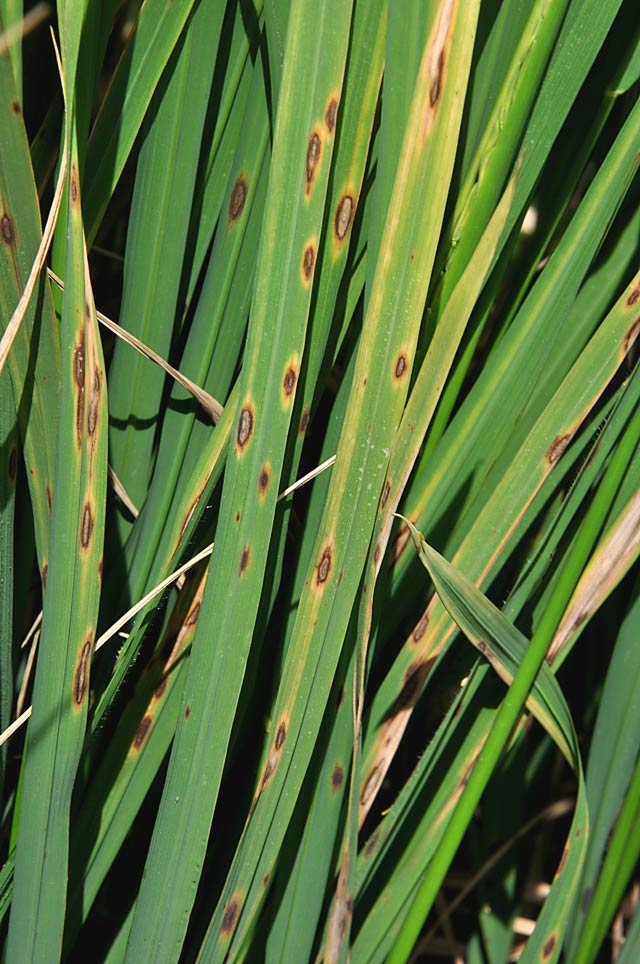

Brown spot 
Brown spot
Brown spot has been historically largely ignored as one of the most common and most damaging rice diseases.
What it does
Brown spot is a fungal disease that infects the coleoptile , leaves, leaf sheath, panicle branches, glumes , and spikelets.
Its most observable damage is the numerous big spots on the leaves which can kill the whole leaf. When infection occurs in the seed, unfilled grains or spotted or discolored seeds are formed.
Why and where it occurs
The disease can develop in areas with high relative humidity (86−100%) and temperature between 16 and 36°C. It is common in unflooded and nutrient-deficient soil, or in soils that accumulate toxic substances.
For infection to occur, the leaves must be wet for 8−24 hours.
The fungus can survive in the seed for more than four years and can spread from plant to plant through air. Major sources of brown spot in the field include:
- infected seed, which give rise to infected seedlings
- volunteer rice
- infected rice debris
- weeds
Brown spot can occur at all crop stages, but the infection is most critical during maximum tillering up to the ripening stages of the crop.
How to identify
Check for lesions:
- Infected seedlings have small, circular, yellow brown or brown lesions that may girdle the coleoptile and distort primary and secondary leaves.
- Starting at tillering stage, lesions can be observed on the leaves. They are initially small, circular, and dark brown to purple-brown.
- Fully developed lesions are circular to oval with a light brown to gray center, surrounded by a reddish brown margin caused by the toxin produced by the fungi.
On susceptible varieties, lesions are 5−14 mm long which can cause leaves to wilt. On resistant varieties, the lesions are brown and pinhead-sized.

Lesions on leaf sheaths are similar to those on the leaves. Infected glumes and panicle branches have dark brown to black oval spots or discoloration on the entire surface.
Spikelets can also be infected. Infection of florets leads to incomplete or disrupted grain filling and a reduction in grain quality. The disease-causing fungi can also penetrate grains, causing 'pecky rice', a term used to describe spotting and discoloration of grains.
In certain rice varieties, brown spot lesions can be mistaken for blast lesions. To confirm, check if spots are circular, brownish, and have a gray center surrounded by a reddish margin.
Why is it important
Brown spot causes both quantity and quality losses.
On average, the disease causes 5% yield loss across all lowland rice production in South and Southeast Asia. Severely infected field can have as high as 45% yield loss.
Heavily infected seeds cause seedling blight and lead to 10−58% seedling mortality. It also affects the quality and the number of grains per panicle, and reduces the kernel weight.
In terms of history, Brown spot was considered to be the major factor contributing to the Great Bengal Famine in 1943.
How to manage
Improving soil fertility is the first step in managing brown spot. To do this:
- monitor soil nutrients regularly
- apply required fertilizers
- for soils that are low in silicon, apply calcium silicate slag before planting
Fertilizers, however, can be costly and may take many cropping seasons before becoming effective. More economical management options include:
- Use resistant varieties.
Contact your local agriculture office for up-to-date lists of varieties available. - Use fungicides (e.g., iprodione, propiconazole, azoxystrobin, trifloxystrobin, and carbendazim) as seed treatments.
- Treat seeds with hot water (53−54°C) for 10−12 minutes before planting, to control primary infection at the seedling stage. To increase effectiveness of treatment, pre-soak seeds in cold water for eight hours.
-
Content expert: Jo Catindig (email: j.catindig@irri.org) and Bryce Blackman (email: b.blackman@irri.orgp).
Disclaimer: All information are taken from http://www.knowledgebank.irri.org/